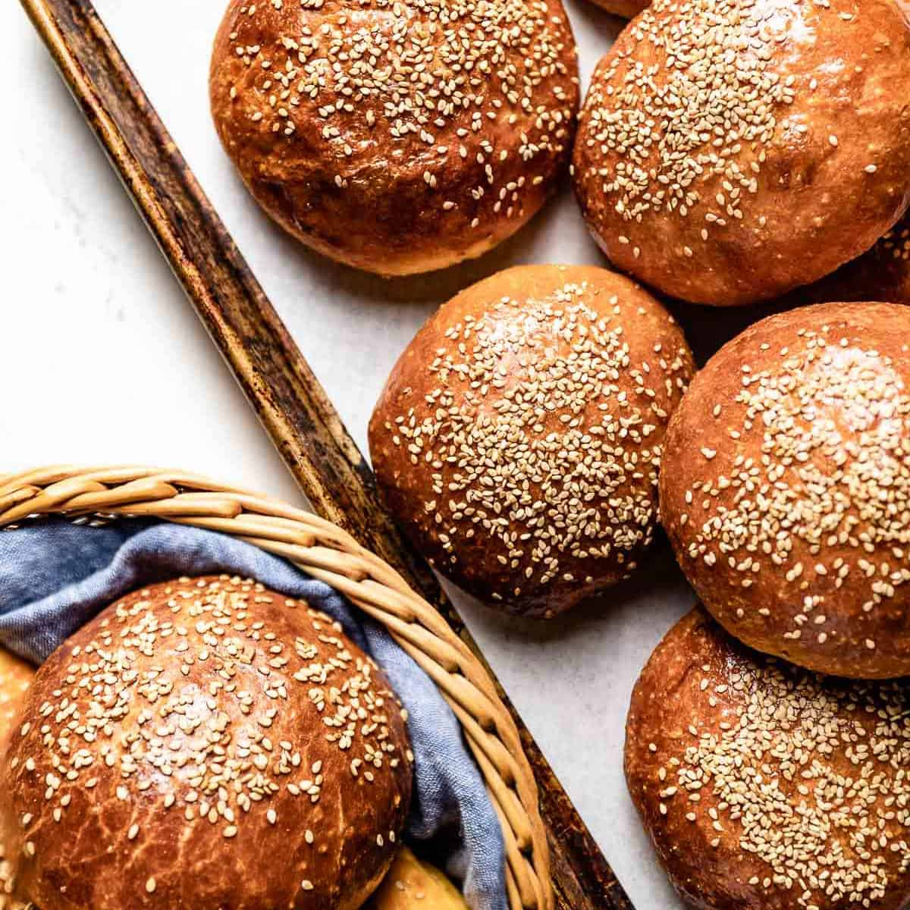

🍞 Brioche Buns.
Description:
Brioche is a pastry of French origin whose high egg and butter content gives it a rich and tender crumb. The chef Joël Robuchon described it as "light and slightly puffy, more or less fine, according to the proportion of butter and eggs". It has a dark, golden, and flaky crust, frequently accentuated by an egg wash applied after proofing. Brioche is considered a Viennoiserie because it is made in the same basic way as bread but has the richer aspect of a pastry because of the addition of eggs, butter, liquid (milk, water, cream, and, sometimes, brandy) and occasionally sugar. Brioche, along with pain au lait and pain aux raisins—which are commonly eaten at breakfast or as a snack—form a leavened subgroup of Viennoiserie. Brioche is often baked with additions of fruit or chocolate chips and served on its own or as the basis of a dessert, with many regional variations in added ingredients, fillings, or toppings.
Ingredients:
- 1 tablespoon active dry yeast
- ⅓ cup warm water (110 degrees F)
- 3 ½ cups all-purpose flour
- 1 tablespoon white sugar
- 1 teaspoon salt
- 4 large eggs
- 1 cup butter, softened
- ½ teaspoon vegetable oil, or as needed
- For egg wash: 1 large egg yolk, 1 teaspoon cold water
Steps:
- Gather all ingredients.
- Dissolve yeast in warm water in a small bowl. Let stand until creamy, about 10 minutes.
- Stir together flour, sugar, and salt in a large bowl. Make a well in the center, then add eggs and yeast mixture; beat well until dough comes together. (Tip: Add 1 to 3 tablespoons of additional warm water, 1 tablespoon at a time, only if needed to help the dough come together.)
- Turn dough out onto a lightly floured surface and knead until smooth and supple, about 8 minutes.
- Flatten dough and spread it with 1/3 of the butter.
- Knead butter into dough.
- Repeat this step twice to incorporate remaining butter, allowing dough to rest for a few minutes between additions of butter, about 20 minutes total.
- Lightly grease a large bowl with vegetable oil, place dough in the bowl, and turn to coat. Cover with plastic wrap and let rise in a warm place until doubled in volume, about 1 hour.
- Punch down dough, cover with plastic wrap, and refrigerate for 6 hours to overnight.
- Preheat the oven to 400 degrees F (200 degrees C). Lightly grease two 8x4-inch loaf pans.
- Turn dough out onto a lightly floured surface. Divide dough into 2 equal pieces, form into loaves, and place into the prepared loaf pans.
- Cover with greased plastic wrap and let rise until doubled in volume, about 1 hour.
- Make egg wash: Beat egg yolk and cold water in a small bowl. Brush on the tops of loaves.
- Bake loaves in the preheated oven until the tops are deep golden brown, about 25 minutes. Cool in the pans for 10 minutes before transferring to wire racks to cool completely.